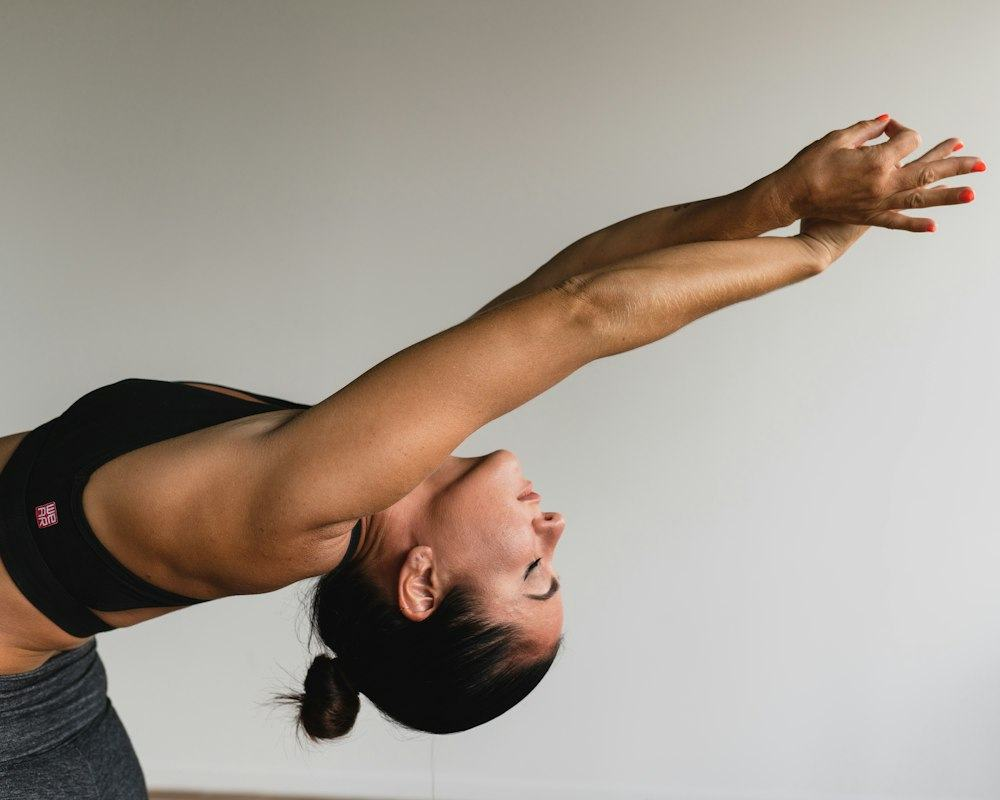

Ana Rebollo
Yoga vinyasa y yoga para la espalda · fundadora
Ana abrió Sala Vacía después de diez años dando clases en gimnasios con la música a tope. Quería lo contrario: un sitio donde se oyera la respiración. Sus clases de las siete y media son las que más madrugadores fieles tienen del estudio.
Formación
- Profesora de yoga RYT-500, formación en Rishikesh y Madrid
- Especialización en yoga terapéutico para columna
- Fisioterapeuta de formación, colegiada en Extremadura
Cómo enseña
Secuencias que se construyen poco a poco, mucha atención a la alineación y una indicación precisa en vez de diez vagas. Si tienes una molestia, te da una variante antes de que la pidas.
Sus clases
Vinyasa al amanecer · L, X, V 7:30
Yoga para la espalda · M, J 10:00
Vinyasa fluido · M 20:00
Práctica larga · S 9:30